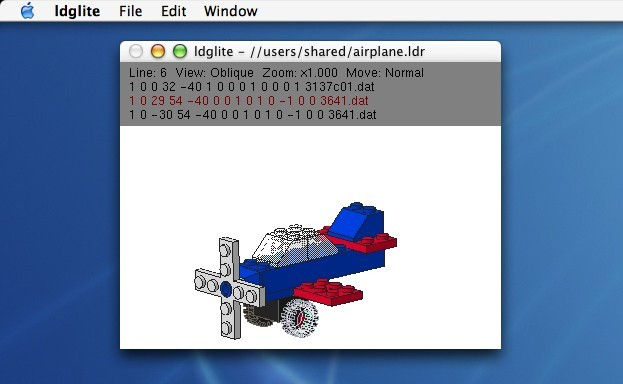
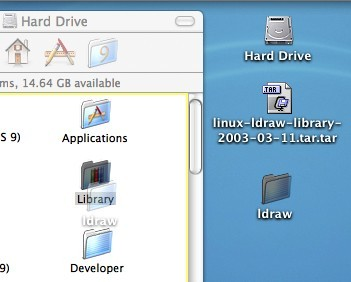
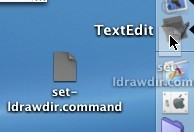
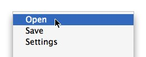
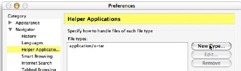
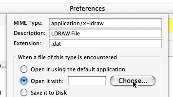
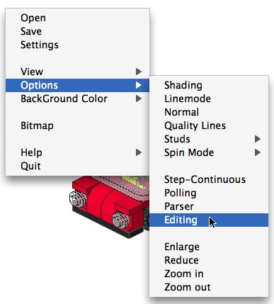

Ldglite allows Mac OS X users to view and edit LDRAW
.dat (or ".ldr") files.
|
Step 1: Getting the Software To use ldglite you need the LDRAW parts directory. Go to the ldraw.org site to download the complete zip version of the parts directory. |
|
Place the newly created "ldraw" directory in the "/Library" folder (the "Library" folder that can be seen when the hard drive is opened). |
 |
Get ldglite for Mac OS X at http://ldglite.sourceforge.net/. |
|
|
Step 2: Setting the LDRAWDIR Environment Variable Use the shell script "set-ldrawdir.command" to set the LDRAWDIR variable. To simplify the installation and configuration of ldglite, "set-ldrawdir.command" was created. For "set-ldrawdir.command" to work correctly the "ldraw" directory must be placed in the "/Library" folder or the "/Users/yourusername/Library" folder (the Library folder in your home directory). Double click the set-ldrawdir.command file. Apple's Terminal application will launch and a shell script will run. The shell script will check for a file called "environment.plist" in an invisible directory called ".MacOSX" in your home directory. If one exists, the script will backup the existing environment.plist as environment.backup, and create a new file that contains the information for the original "environment.plist" and the information required for "ldglite" to function. |
|
|
If you didn't place the "ldraw" directory in either of the "Library" directories edit the supplied "set-ldrawdir.command" to reflect this fact. Launch TextEdit. It should be in your "/Applications" folder. Open the set-ldrawdir.command with TextEdit by dragging the "set-ldrawdir.command" icon to the TextEdit's Dock icon or by selecting Open from TextEdit's File menu. |
 |
Before saving the changes you made, you must make certain that TextEdit will save the file in the correct format. |
|
Select Save from the File menu.Now that you have edited the "set-ldrawdir.command" file, you can double click the file.
Step 3: Viewing LDRAW Files
You must log out and log back in before using ldglite.
After logging out and logging back in, you can now launch ldglite by double clicking the icon or by dropping a ".ldr" or ".dat" file on the icon. (Currently, dragging and dropping only works if ldglite is not running when the ".ldr" file is dropped on it.)
To open ldraw files when ldglite is running, (the preferred method for opening a file) hold the control button while clicking on an open ldglite window. A pop up menu will appear. |
 |
Navigate by using the arrow keys or by using the mouse. Move up a level by clicking the Up button. Select a directory and enter it by double clicking the directory's name. |
|
|
|
|
|
Each time you enter a new directory, that fact will be reflected in the path listed in the upper left corner of the window, and you will see the contents of the new directory. Once you have reached the desired directory, double click the file that you wish to open. |
|
Step 4: Using Mozilla or Netscape to View LDRAW Files from the Web |
|
|
|
In the Preferences settings window, select Helper Applications, and click the New Type... button. |
 |
In the MIME Type: field enter application/x-ldraw. |
 |
Now you can also launch ldglite from Mozilla or Netscape by browsing lugnet.com and clicking on the [DAT] links. |
|
Step 5: Creating and Editing LDRAW Files
Built into ldglite is an LEDIT compatible interactive LDRAW file editor. You can switch ldglite into LEDIT mode by holding the Control key and clicking the mouse button in the ldglite window. This will activate the ldglite popup menus. Select Options from the main menu and Editing from the submenu to toggle between the viewing and editing modes. |
 |
Step 6: Accessing the Command Line Versions of ldglite and mklist
The command line versions of ldglite and mklist are inside the ldglite.app application bundle. To launch ldglite or mklist from the command line you will either have to specify the path or create a soft link to the file.For example,
ln -s /path-to-ldglite.app/ldglite.app/Contents/MacOS/ldglite ~/ldgliteand
ln -s /path-to-ldglite.app/ldglite.app/Contents/MacOS/mklist ~/mklist
Known Issues with Video Cards in Older Systems
Visual anomalies have been noted with PowerBook G3(FireWire) and 1st Generation PowerBook G4 computers, other computers with only 8 MB of VRAM may display the same video anomalies. The anomalies that occur at the various screen resolutions and bit depths have been tabulated here. It is worth noting that a window size of 800x537 is the largest window that will allow PowerBook G3 (FireWire) computers to use hardware accelerated video.
Known Issues for Non-administrative Users
LDGLite will not warn a user when a file is not successfully saved. Under certain circumstances, LDGLite defaults to saving files at the root level of the hard drive on which LDGLite is installed. Only an administrative user can write the root directory, and if a non-administrative user tries to write to the root directory, the operation will fail without warning. Please pay extra attention to where a file is to be written when saving files.
A Bit of History...
The LDRAW system was created by James Jessiman. Many others have added to James' early work by adding editors and viewers for a variety of computer operating systems. Additionally, the library of bricks that can be used to build models continues to grow.
Ldglite is a port of ldlite. Ldlite was written by Paul Gyugyi, and that code was used as a starting point to create a cross platform version of the program using the OpenGL graphics library. Thus the name ldglite. The original port of ldglite to OS X was a command line driven program which had to be launched from a terminal window. Recently ldglite was converted into a double clickable Mac OS X application, some bugs caused by the video drivers on older Apple systems were fixed, and the set-ldrawdir.command script was created by Tom Bozzo to simplify the installation. Before this the LDRAWDIR variable used by ldglite had to be set by hand using a terminal window, and ldglite had to be launched from the command line.